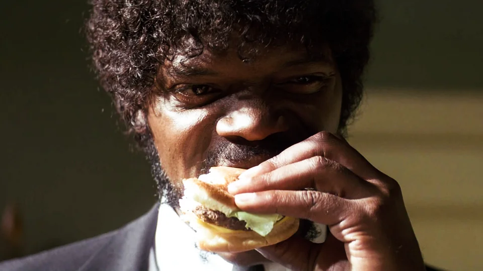

Royale with Cheese

Learn to master grilling the perfect cheeseburger. The Royale with Cheese is a delicious version of the classic burger.
INGREDIENTS
- 2 Lbs Ground Chuck Beef 80% lean / 20% fat
- 4 Tsp Salt
- 1 Tsp Pepper
- 4 Slices Tomato
- 1 Onion
- 4 Leaves Lettuce
- 4 Hamburger Buns
- 4 Slices Cheddar Cheese Tillamook
INSTRUCTIONS
- Cut up the tomato & onions and get the lettuce all set to go.
- Get your grill/pan/etc hot.
- Salt & pepper the ground beef and then divide into 8oz (1/2 lb) portions (or you can use smaller 6oz portions). Flatten into patties that are about 1/2 inch larger than the buns.
- Put a thumbprint in the middle of the patty so it doesn’t puff up when cooking.
- Grill your burgers about 4min on the first side.
- Flip burgers and immediately add cheese. Put the buns face down on the grill. Cook until you reach the correct temp (140F for medium), usually about 2 to 4 minutes.
- Stack up the ingredients and enjoy!